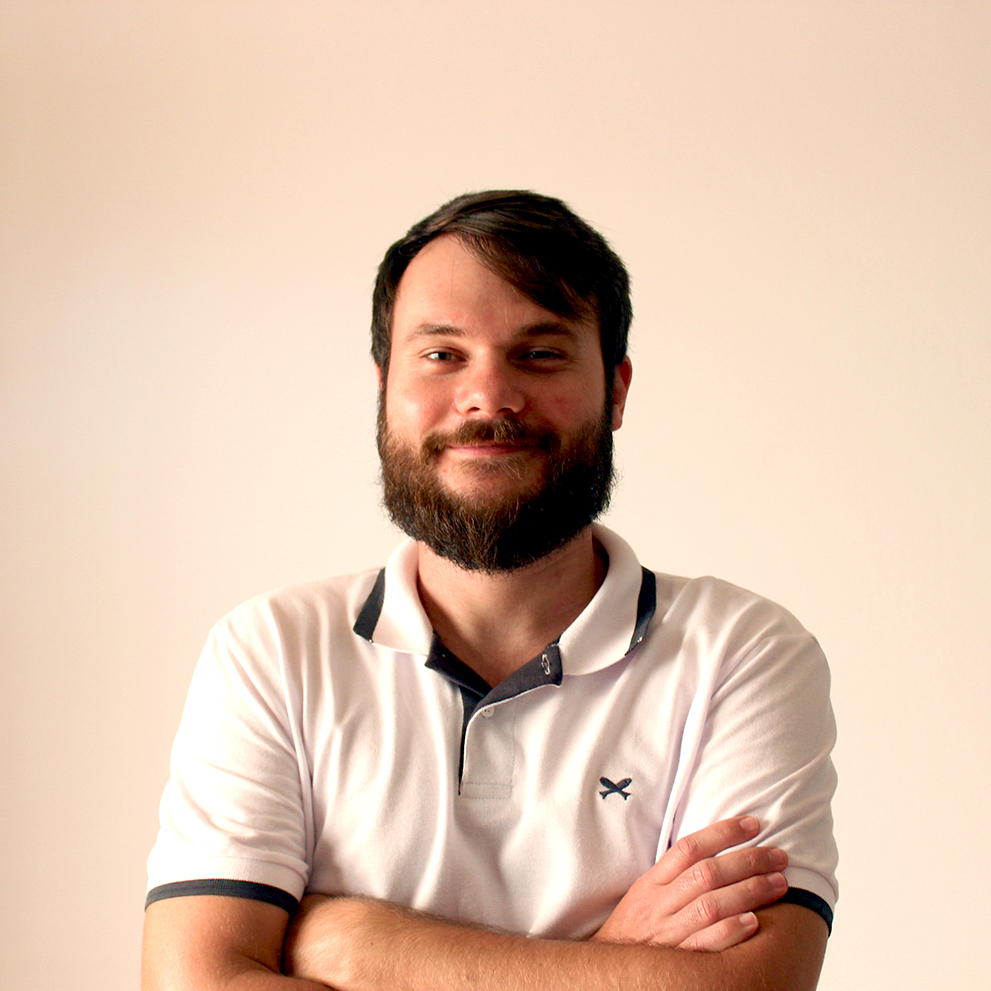

Fabiano Damasio
Dados
- Brasileiro
- Casado
- 30 anos Rua São Benedito, 1031, apto. 303 Bloco 2, Serraria, São José, SC
- 48 98870-0047 | 47 98823-9033
- fabiano_damasio@hotmail.com
- Facebook
- Instagram
Objetivo
Me desenvolver em uma empresa dando meu melhor e proporcionando a troca de experiências através de bons relacionamentos interpessoais. Sou uma pessoa comunicativa e dedicada, capaz de aprender novos programas e métodos com facilidade e rapidez.
FormaçãoAcadêmica
- 2015-2018 | Bacharelado em Teologia FLAM (Faculdade Latino Americana de Teologia), Arujá, SP
- 2012-2014 | Bacharelado em Eng. Civil(incompleto) UNIASSELVI – FAMESUL, Rio do Sul, SC
- 2008-2011 | Tecnólogo em Automação Industrial UNIDAVI em convenio com SENAI, Rio do Sul, SC
- 2006-2007 | Técnico em Mecânica Educação Profissional SENAI (Serviço Nacional de Aprendizagem Industrial), Rio do Sul, SC
Idiomas
Inglês | EFA (2 anos) Nível Intermediário
Espanhol | SENAI Nível Básico
Alemão | Colégio Sinodal Ruy Barbosa Nível Básico
Cursos Extras
Fotografia Curso na Udemy (60 h)
Experiências Profissionais
- Editor de Vídeos e Marketing Digital Profissional Autônomo na Comunidade Encontro Florianópolis, SC
Atuando na criação e edição de vídeos para divulgação de eventos e atividades do cliente. Além do gerenciamento das páginas de mídias sociais.
01/2019 a 01/2020
- Estagiário de Teologia Seminarista na Igreja Presbiteriana de São Miguel Paulista São Paulo, SP.
01/2016 a 12/2018
- Desenhista II Desenhista na ZANELLA ENG. E IND DE MÁQUINAS Rio do Sul, SC
Atuando na área de desenhos no setor de Armazenagem.
01/2013 a 12/2014
- Desenhista e Projetista Projetista Mecânico na BREVIL – BREMER & MARCOVIL METALOMECÂNICA Rio do Sul, SC
Atuando na área de projetos no setor de Elevação de Cargas.
02/2012 a 11/2012
- Desenhista Projetista Projetista Mecânico na ICAVI - Indústria de Caldeiras Vale do Itajaí Rio do Sul, SC
Atuando na área de projetos no setor de Geração de Vapor, com caldeiras, aquecedores de fluidos, queimadores secos.
11/2010 a 01/2012
- Desenhista Copista I Desenhista detalhista e Projetista HERGEN S/A MÁQ. E EQUIPAMENTOS Rio do Sul, SC
Atuando na área de projetos no setor de Papeleiro.
03/2008 a 11/2010